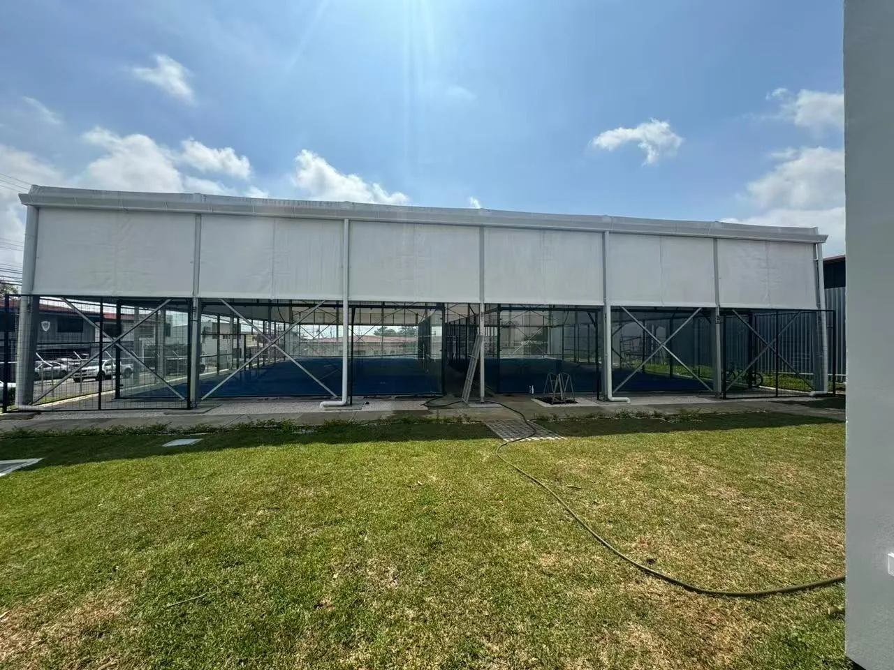
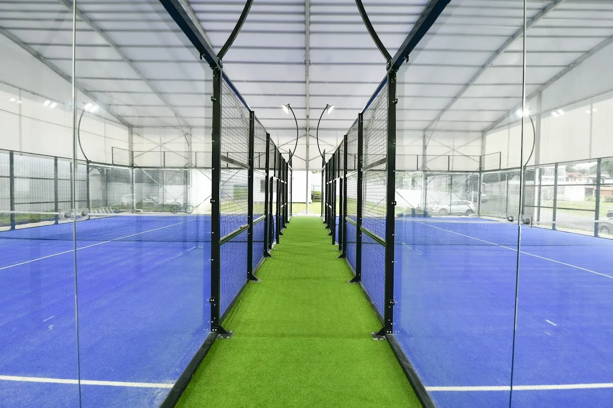
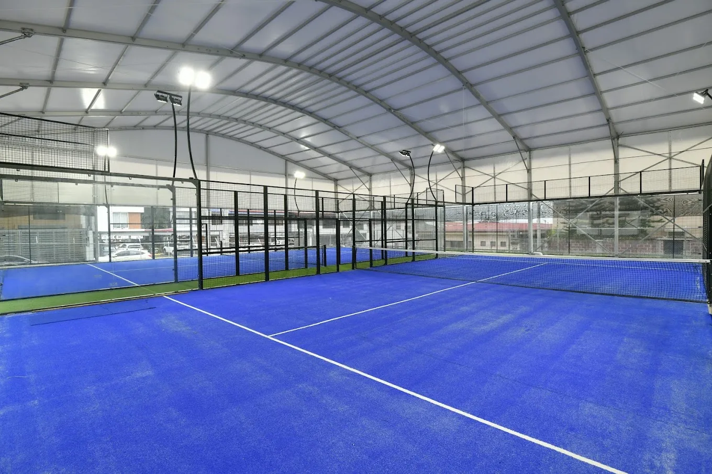
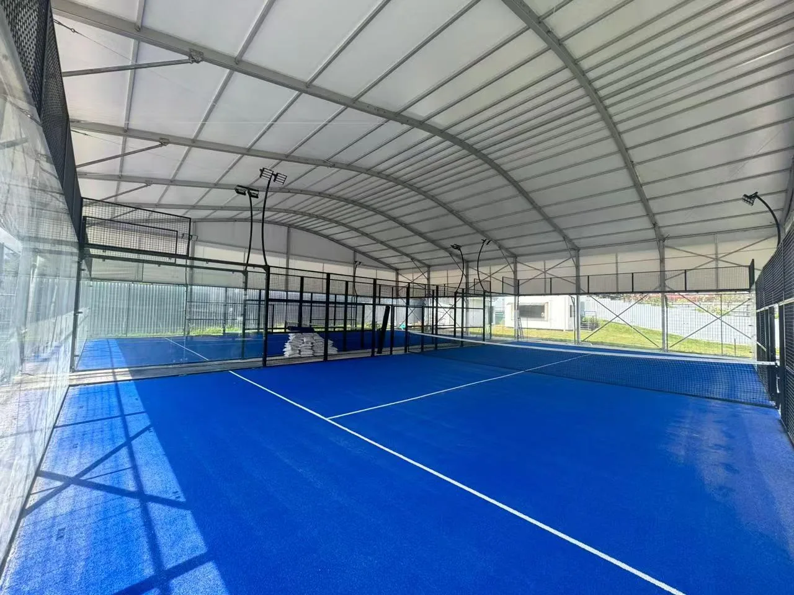
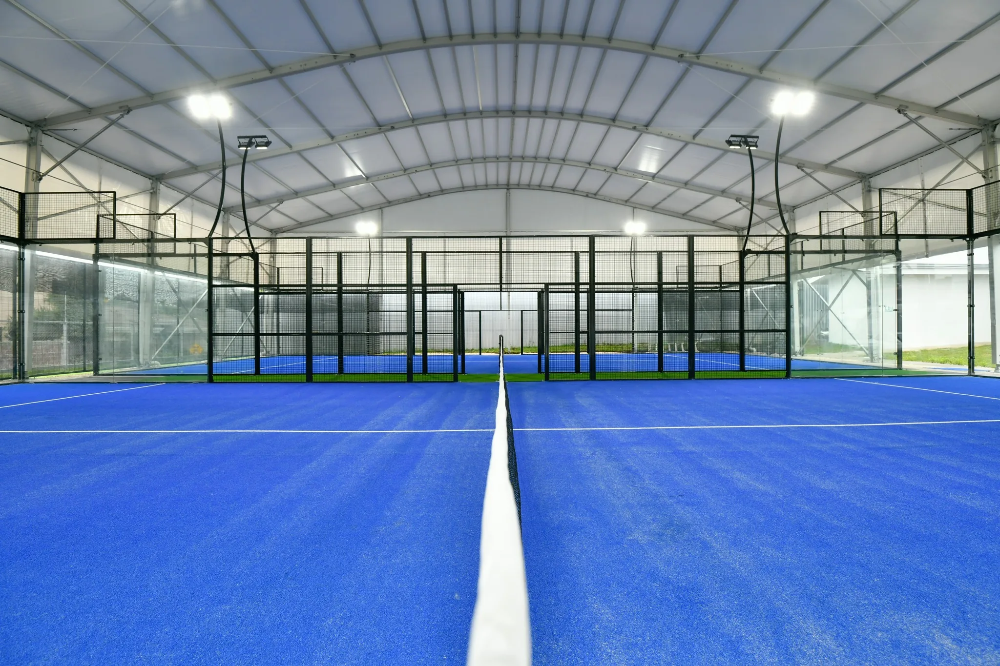

Review the court system
Compare the panoramic padel court system with other commercial court options for the venue brief.
A real two-court panoramic padel installation in Costa Rica, documented through completed project photography of the covered venue, court layout and lighting environment.
The available project record verifies the country, two-court configuration, panoramic court type and covered setting.
| Location | Costa Rica |
| Project Type | Covered padel facility |
| Court Quantity | Two courts |
| Court System | Panoramic padel courts |
| Project Record | Completed installation photography |
The city, client, completion date, foundation type, roof specification and installation responsibility are not stated because they are not verified in the available project record.

Project photography shows two panoramic courts arranged side by side beneath one clear-span covered structure, with a central circulation route connecting the playing areas.

These observations describe visible project conditions only; they do not establish structural loads, roof materials or engineering specifications.
The completed photographs document how the courts, overhead structure and lighting sit together within the venue.



A covered multi-court project should be developed from verified site information rather than copied from project photographs. Buyers should confirm the court layout, clear dimensions, local wind and rain conditions, foundation interface, drainage, roof brief, lighting and installation responsibilities before engineering and quotation.
Compare the panoramic padel court system with other commercial court options for the venue brief.
Use the padel court roof construction guide to review fixed vs retractable coverage, foundation, wind and drainage, then compare the current SPORTENVO padel court roof systems for the project brief.
Use the padel court dimensions guide to plan court clearances and circulation.
Use these resources to define site requirements, compare project cost factors and prepare a clearer enquiry.
Share the project country, number of courts, site dimensions, indoor or outdoor setting, foundation condition, wind requirements, roof brief and installation needs.
Start a Similar Project ↗